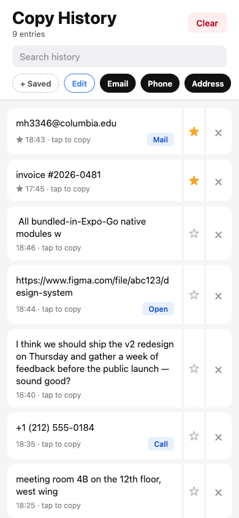
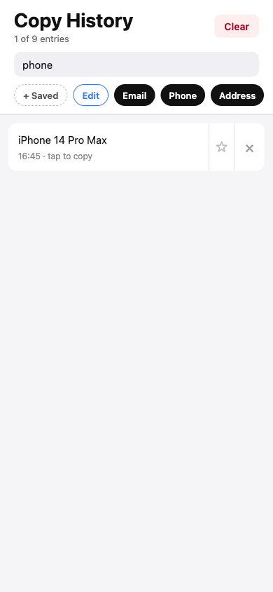

Auto-capture
While the app is open, anything you copy from another app lands in the list — newest first.
Now in beta · iOS via Expo Go
A private clipboard history for iPhone. Anything you copy while the app is foregrounded stays here — on-device, never sent anywhere.
Offline-firstNo adsNo accountsOpen source
Features
The whole feature set, plainly listed — no upsells gating the basics.
While the app is open, anything you copy from another app lands in the list — newest first.
Pinned entries are exempt from the 500-entry cap, so important copies never fall off.
Hand-curate the stuff you copy often — email, phone, address — and they live above the history.
URLs, emails and phone numbers get an inline Open / Mail / Call button beside the timestamp.
Filter the list as you type. The subtitle shows N-of-M so you always know what's hidden.
No analytics, no third-party SDKs, no network calls. The Privacy Nutrition Label is honestly 'Data Not Collected'.
How to play
A few short steps. The app gets out of your way after that.
While Copy History is in the foreground, iOS will let it read the clipboard. New copies are captured automatically.
Any entry in the list, tap it and the text goes straight back to your clipboard.
Tap the ★ to mark an entry. Pinned entries sit on top and are protected from eviction.
Tap + Saved above the search box to make a labelled template — email, phone, address, anything you paste often.
If an entry is a URL, email, or phone number, an Open / Mail / Call button appears. Tap it to hand off to the system.
Screenshots
Captured from the running app at iPhone 14 viewport.

